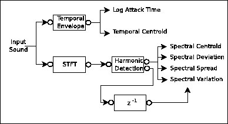

Next: The Coding Step (Content Up: The Analysis Step (Content Previous: Low-level Descriptors
While descriptors presented until now are purely morphologic (i.e. they do not carry any information on the actual meaning of the source and just refer to its inner structural elements), high-level descriptors can carry either semantic or syntactic meaning.
Syntactic high-level descriptors can be sometimes computed as a combination of low-level descriptors. They refer to features that can be understood by an end-user without previous signal processing knowledge but do not carry semantic meaning. In other words, syntactic descriptors cannot be used to label a piece of sound according to what actually is but rather to describe how it is distributed or what is made of (i.e. its structure). Thus, syntactic descriptors can be seen as attributes of our sound classes but, by themselves, cannot be used to identify objects and classify them. For that reason, the computation of syntactic descriptors (either low or high-leveled) is not dependent on any kind of musical knowledge, symbolic or real-world knowledge. In [Petters et al., 1999], for example, we presented a way of describing timbre of isolated monophonic instrument notes (the scheme for computing the descriptors of a harmonic timbre is depicted in Figure 5.8). In the case of our timbre descriptor, for example, the resulting descriptor is not sufficient to label a note as being violin or piano but rather to compute relative perceptual distances between different instrument samples.
|

|
On the other hand, semantic descriptors refer to meaningful features of the sound and are ``understandable'' for the end-user. We therefore need to apply more high-level or real world knowledge. The degree of abstraction of a semantic descriptor though has a wide range, labels such as ``scary'' or more concrete such as ``violin sound'' can be considered semantic descriptors.
The main purpose of a semantic descriptor is to label the piece of sound to which it refers using a commonly accepted concept or term that corresponds to a given sound class (e.g. instrument, string instrument, violin...). Descriptors used as the result of a classification process are called classifying descriptors. It is interesting to note that, in this case, the classification process is performed in a top-down manner. Using low-level or high-level syntactic descriptors we might be more or less immediately be able to identify our piece of sound in as belonging to an abstract class (in the worst case we are always able to classify it as a Sound Object). Applying both real-world knowledge and signal processing knowledge we may be able to get our problem to a more concrete ground and start down-casting our description to something like ``string instrument'' or ``violin''. Note that for this classification process different techniques may be used being the most obvious a basic decision tree.
Other semantic descriptors, though, do not aim at classifying the sound but rather at describing some important feature or attribute. These descriptors can label a sound as being ``loud'', ``bright'' or ``scary''. As a matter of fact these descriptors are not binary and can indeed quantify how much a sound belongs to a given category (i.e. How bright or scary a sound is). We call such descriptors quantifying descriptors. In this case, conversely to what happened with the previous classifiers, the more concrete a feature is the easier it will be to derive it from our previously computed low-level or high-level syntactic descriptors. For example, a label like ``bright'' might be directly derived from the spectral centroid low-level descriptor. Much more real-world knowledge must be applied to be able to classify a sound as ``sad'' or ``frightening''.
Different proposals have been made in order to create a semantic map or multi-level structure for describing an audio scene, one of them being the ten-level map presented in the MPEG Geneva meeting (May, 2000) [Jaimes et al., 2000]. This proposal includes four syntactic levels and six semantic levels: Type/Technique, Global Distribution, Local Structure, Global Composition, Generic Objects, Generic Scene, Specific Objects, Specific Scene, Abstract Objects, and Abstract Scene5.3. Another example of multilevel hierarchies in the context of MPEG-7 is Michael Casey's multilevel content hierarchy for sound effects (see [Casey, 2001]).
While that proposal is quite theoretical and simple, and comes from a generalization of a similar structure proposed for video description, other proposals come from years of studies on the specific characteristics of an audio scene and have even had practical applications. One of the most renowned techniques that can fit into this category is CASA (Computer Auditory Scene Analysis) [Bregman, 1990]. It is far beyond the scope of this section to go deep into any of these proposals, but it is interesting to note that CASA has addressed the issue of describing complex sound mixtures that include music, speech and sound effects, also providing techniques for separating these different kinds of streams into sound objects (see [Nakatani and Okuno, 1998], for example).
It is now important to relate the different kinds of descriptors to the generic DSPOOM classes presented in the previous chapter. At first sight it may seem that all of them are subclasses of the Descriptor class presented in section 3.2.2. And that is true for all of them except for one category: the ``high-level classifying descriptors''. These descriptors carry the description in their own class label and not as attached or independent information. Classifying descriptors are therefore DSPOOM Processing Datas.
2004-10-18